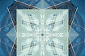

I used the program Adobe Photoshop to create my character, Skia.
I started by looking at my old works and seeing what characters I've made but never expanded on.
I really wanted to make a hero story but with a bit of a fun twist.
So instead of a human seeking out greater power I made a shadow person who happened to be in the right place at the right time.
Skia starts out with a tattered cloak and a rank 1 traveler status.
Skia has a commission to find a dog that ran off into the woods, while in their search they find the legendary sword that talks!
Well.. nags.. It's unsatisfied with the young traveler’s complacency and decides to punish the Traveler by making them help wherever it is needed.

Visual Design Artifact#2
I used Adobe Photoshop to edit and transform a picture of a house into this kaleidoscope. I first put a filter on it and then changed the canvas size to mirror the picture. Then I rotated the image twice and put a blending mode on it. I wanted it to come out creepy and I think I did it.
I chose Millie Bobby Brown for this because I am obsessed with her personality and everythings she has acted in was amazing. I used a very simple looking filter to get it like this and I like how it came out.
I combined a fennec fox, a deer and a cheetah. I wanted to make a small and fast animal that is capable of defensive fighting, thus the antlers. I chose these animals because cheetahs are the fastest animal I know of and I have loved fennec foxes since I found out they existed.

The social justice topic I chose was, “women’s rights to Bodily autonomy”. This specific topic is important to me because I am a female-bodied person and these laws are affecting me directly. When the court starts to dictate what medical help that we can seek, that is control. The fight for women’s rights needs community, we need to come together so that they can’t turn us away any longer.
{kind=link}